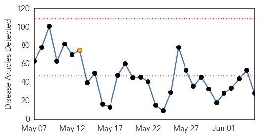
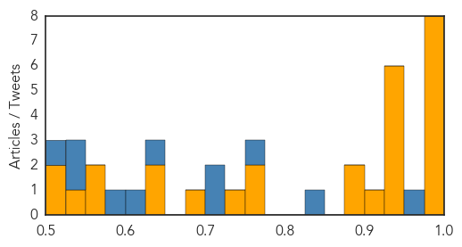
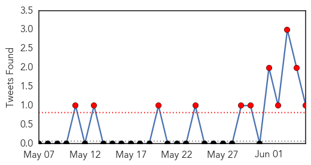

Ebola
30-Day Web Trend
0 alerts, 1 warnings

30-Day Twitter Trend
0 alerts, 0 warnings

Article Locations

Article Confidences
Top Articles:
- 1.000
- Fourth patient dies of MERS in South Korea
- 0.999
- After Ebola, Africa struggles to rebuild healthcare system
- 0.997
- Ebola-like outbreak is rocking the South Korean nation to its very foundations
- 0.997
- A Nurse Epidemiologist’s Notes on Issues Raised by a Recent Death from Lassa Fever
- 0.992
- South Korea to Assist North Korea Amid MERS Outbreak
- 0.990
- Twitter gave Nigeria an early Ebola warning
- 0.983
- British scientists release Ebola sequencing data
- 0.975
- Sierra Leone Burial Teams Lauded for Efforts to Stop Ebola
- 0.947
- Meet The Man Tasked With Building An Ebola Hospital In Liberia
- 0.946
- U.S. JCRP to launch PREVAIL III Study June 15
- 0.941
- MSF Says The World Is Not Prepared To Handle Another Global Pandemic
- 0.939
- (LEAD) S. Korea to offer MERS detection devices to N. Korea
- 0.936
- Countries hit by epidemics may get financial safety net
- 0.933
- S. Korea to offer MERS detection devices to N. Korea
- 0.903
- How BT MyDonate helps African children to learn despite the Ebola crisis
- 0.892
- Back from Ebola to teach the next generation
- 0.890
- Concern Universal donates Ebola kits to Health Ministry
- 0.753
- Researchers discover two new groups of viruses
- 0.751
- Beyond Ebola, laying the Foundations for Caribbean Regional Health Security
- 0.728
- S. Korea to offer MERS detection devices to N. Korea next week
- 0.679
- China Donates 16 Protocol Vehicles Valued At Over 1M USD To Liberia
- 0.650
- Quality of PH public healthcare declining
- 0.646
- Concern Universal gives medical equipment to MOHSW
- 0.555
- Africa’s Richest Man Commissions $500 Million Cement Plant In Ethiopia
- 0.555
- Vice President Bockarie Assures Hope For Kailahun District peoples.
- 0.541
- Dear G7, it's Time to Put Girls and Women at the Top of Your Agenda
- 0.505
- Education Minister lauds World Vision Sierra Leone - Sierra Leone
- 0.501
- Seoul to lends NK help to prevent MERS at inter-Korean industrial park
Top Tweets:
- 0.948
- Ebola Drug Development Slowed by Lack of Patients - Medscape http://t.co/tVubxeSuMX ebola EVD
- 0.945
- Global health leaders ask G7 for post-Ebola rapid response unit - Reuters http://t.co/bbB9wSUAOi ebola EVD
- 0.939
- Post-Ebola rapid response unit needed, health leaders tell G7 - CBC.ca http://t.co/CmQrk64ycX ebola EVD
- 0.887
- New in Ebola Diaries: When Leticia arrived in Liberia, people weren't taking the virus seriously http://t.co/smBaJg8C5N EbolaResponse
- 0.865
- West African Nations Struggle to Rebuild Health-Care After Ebola - Wall Street Journal (blog) http://t.co/SBmmMcsmXY ebola EVD
- 0.865
- Twitter gave Nigeria an early Ebola warning - CNBC http://t.co/4FB26WpB2o ebola EVD
- 0.864
- Ebola Update: 27,173 confirmed, probable & suspected cases reported in 3 most affected countries, with 11,149 deaths. EbolaResponse
- 0.853
- Screen Yields Potential Ebola Drugs - The Scientist http://t.co/hfFy2YPCSy ebola EVD
- 0.852
- Ebola could be treated with anti-depressants, doctors claim after curing mice ... - Mir http://t.co/K7zVPWfA7a ebola EVD
- 0.825
- Ebola: CDC lab in Sierra Leone has done >17,000 tests. Sierra Leone is near finish line but needs to keep focus & intensity. EndEbola
- 0.778
- The last health worker Ebola infections in Guinea & SierraLeone were reported on 6 April & 14 May, respectively http://t.co/o0CiByiwCq
- 0.757
- Ebola Résistance en Guinée – juin 2015 anthropologie http://t.co/RgRuUhwE9b
- 0.743
- Liberia Prepares for Border Surveillance ebola http://t.co/nEC3FSpQMS via
- 0.722
- MERS, SARS, Ebola: How dangerous are they? @usatoday http://t.co/WnIbPH6ohh
- 0.654
- 5 June news overview on avianflu avianinfluenza Ebola EbolaResponse MERS http://t.co/bsKqDRLlXO
- 0.642
- Ebola: out of headlines but CDC professionals still on frontlines. >1000 CDC staff have deployed to W Africa; >150 there today. EndEbola
- 0.628
- A screen of approved drugs and molecular probes identifies therapeutics with anti–Ebola virus activity http://t.co/9IzCAoNTJF
- 0.582
- West Africa Struggles to Rebuild Its Ravaged HealthCareSystem ebola http://t.co/NsT2xXC2ik
- 0.571
- Sierra Leone Burial Teams Lauded for Efforts to Stop Ebola - Voice of America http://t.co/k5yPWcjmu1
- 0.541
- LessonsLearned from the Ebola response via http://t.co/hs3Qry9Pk8
- 0.537
- Gambia. Concern Universal Donates Ebola Kits to Health Ministry http://t.co/UJMI5pfdvI via
- 0.535
- What Factors Might Have Led to the Emergence of Ebola in West Africa?@PLOSNTDs http://t.co/6aJT43djeQ
- 0.515
- G7 Bavaria summit: 26 hours of climate, trade and Ebola talks – and an oompah ... - The Guardian http://t.co/P63AttI23Y ebola EVD
- 0.511
- Global health leaders ask G7 for post-Ebola rapid response unit http://t.co/iY31c5ajN5 via
- 0.500
- West Africa Struggles to Rebuild Its Ravaged Health-Care System - Wall Street Journal http://t.co/vtHsH6iwMQ ebola EVD
MERS
30-Day Web Trend
15 alerts, 2 warnings

30-Day Twitter Trend
11 alerts, 0 warnings

Article Locations

Article Confidences

Top Articles:
- 1.000
- What you need to know about Middle East Respiratory Syndrome
- 1.000
- Newest MERS Cases Raise Fear of Containment Breach
- 1.000
- MERS: Fresh cases, 900 schools closed in South Korea
- 1.000
- MERS: What you need to know about Middle East Respiratory Syndrome
- 1.000
- What is MERS? And Other Questions About the Outbreak
- 1.000
- South Korean MERS outbreak is not a global threat
- 1.000
- Everything You Need to Know About the Middle East Respiratory Syndrome
- 1.000
- US expert says MERS outbreak unlikely to become pandemic in Korea
- 1.000
- What Is MERS, Middle East Respiratory Syndrome? And What You Need To Know About The Deadly Virus
- 1.000
- South Korea MERS cases rise as Seoul's mayor declares 'war' on the virus
- 1.000
- WHO and the Republic of Korea to carry out joint mission for the MERS-CoV outbreak. ~ Friday, 5th June 2015 from 4Hoteliers
- 1.000
- Ministry warns about possibility of spread of MERS from S. Korea to Vietnam
- 1.000
- (Yonhap Interview) MERS outbreak unlikely to become pandemic
- 1.000
- (4th LD) S. Korea reports 4th death from MERS, with 6 new cases
- 1.000
- (3rd LD) S. Korea reports 4th death from MERS, with 5 new cases
- 0.999
- Panic spreads in South Korea as MERS deaths increase
- 0.999
- How Authorities Hope to Keep MERS From Spreading in the US
- 0.999
- WHO: No need for travel advisory over MERS-CoV to and from Seoul
- 0.999
- Newest MERS Cases Raise Fear of Containment Breach
- 0.999
- China's first MERS patient in serious condition
- 0.998
- Strict measures ensure chances of MERS spreading remain low , news, Health News, AsiaOne YourHealth
- 0.998
- Fourth patient dies of MERS; Hundreds of schools cancelled class due to outbreak in South Korea
- 0.998
- Spread of MERS is low, thanks to disease controls- China.org.cn
- 0.998
- China's first MERS patient remains in serious condition
- 0.998
- WHO to take part in mission following MERS outbreak in South Korea - Xinhua
- 0.998
- DH closely monitors additional MERS cases in Saudi Arabia and Oman
- 0.997
- Transparency key to beating MERS
- 0.997
- South Koreans squabble over MERS as more cases appear, Government & Economy
- 0.996
- South Koreans squabble about MERS as more cases appear
- 0.996
- UAE issues travel warning on Korea
- 0.996
- Korea names MERS-affected hospital, tracks all visitors
- 0.996
- China's first MERS patient remains in serious condition
- 0.996
- WHO report implies MERS outbreaks in Saudi hospitals
- 0.996
- South Korea’s MERS Case Total Rises To 41 With 4 Deaths; WHO To Send Team In Joint Mission With Government
- 0.995
- South Korea fighting MERS outbreak
- 0.995
- Virus Kills 4 As Country Works To Contain Outbreak
- 0.995
- Outbreak of MERS-CoV-infection in South-Korea, some facts and advice for travellers
- 0.994
- Gov’t discloses name of ground zero for MERS-INSIDE Korea JoongAng Daily
- 0.993
- MERS In Japan? South Korea Travelers Being Monitored To Protect Against Virus
- 0.992
- Third MERS patient dies in South Korea
- 0.991
- Alarm spreads as South Korea reports more MERS cases
- 0.990
- MERS death toll rises to 446
- 0.990
- S. Korean MERS patient in China 'still in serious condition'
- 0.989
- Untitled Article
- 0.989
- China prepares to tackle MERS
- 0.988
- China Beefs Up Efforts to Tackle MERS
- 0.988
- UN health agency dispatches team to Seoul after fourth death reported from MERS
- 0.988
- UN health agency dispatches team to Seoul after fourth death reported from MERS
- 0.988
- Filipinos in South Korea told to take precautions vs Mers-Cov
- 0.988
- Cambodia Urges Travellers Returning From Middle East, S. Korea To Be Vigilant Over MERS
Showing top 50 articles...
Top Tweets:
- 0.722
- See our latest risk assessment on MERS-CoV; most cases continue to be due to nosocomial infections. https://t.co/d6PONwEkNC
- 0.558
- AFD Blog `Saudi MOH Announces 5 More MERS-CoV Cases ' http://t.co/OoApOM8dsV
- 0.549
- AFD Blog `MERS: More Questions Than Answers' MERS-CoV http://t.co/NjslPu6UGB
- 0.519
- RT: South Korea - Updated coronavirus MERS case list - total now 50 cases https://t.co/0lJvBBCxn4
- 0.519
- AFD Blog `@WHO MERS Update - Korea June 5th' MERS-CoV http://t.co/CGkA5BeCYh